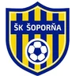

20082. kolo
 ŠK Slovan Bratislava
ŠK Slovan Bratislava
Výsledok OŠK Trenčianske Stankovce – ŠK Slovan Bratislava 0 : 4
Prvý veľký pohárový večer: po výhre nad SFM Senec prišiel do Stankoviec Slovan.
Návrh webu · nie je to oficiálna stránka klubu
futbal od 1959 · klub od 1972
Žlto-čierny klub z obce, ktorá vznikla zo štyroch dedín. Áčko hrá IV. ligu a po jeseni je na 4. mieste. Klub má 7 tímov od prípravky U9 po mužov, doma hrá v Oddychovom centre v Rozvadzi.
15 zápasov: 8 výhier, 2 remízy, 5 prehier, skóre 32:28
| # | Tím | Z | V | R | P | Skóre | B |
|---|---|---|---|---|---|---|---|
| 2 | 15 | 9 | 5 | 1 | 37:15 | 32 | |
| 3 | 15 | 9 | 3 | 3 | 21:11 | 30 | |
| 4 | 15 | 8 | 2 | 5 | 32:28 | 26 | |
| 5 | 15 | 7 | 4 | 4 | 29:19 | 25 | |
| 6 |  ŠK Šoporňa | 15 | 6 | 5 | 4 | 22:16 | 23 |
Slovnaft Cup · Slovenský pohár
Hymna klubu spieva, že také slávne mená nemá „ani Galis v Slovane“, „ani Spartak Trnava“. Stankovce si s oboma zahrali v pohári, s každým dvakrát.
20082. kolo
Výsledok OŠK Trenčianske Stankovce – ŠK Slovan Bratislava 0 : 4
Prvý veľký pohárový večer: po výhre nad SFM Senec prišiel do Stankoviec Slovan.
20223. kolo
Výsledok OŠK Trenčianske Stankovce – FC Spartak Trnava 0 : 6
Po výhrach nad Partizánskym a Novým Mestom hostili Stankovce úradujúceho víťaza pohára.
20254. kolo
Výsledok OŠK Trenčianske Stankovce – ŠK Slovan Bratislava 1 : 6
Úradujúci majster prehrával po 8 minútach 0 : 1 po góle Tomáša Svatíka. Zápas sa hral v Trenčíne, aby sa zmestilo viac ľudí a v novembri bol istý trávnik.
20262. kolo
Výsledok OŠK Trenčianske Stankovce – FC Spartak Trnava 0 : 3
O rok neskôr ďalší veľký súper z hymny: domáci zápas na štadióne v Trnave pred 2 841 divákmi.
„Hrať s najlepším klubom na Slovensku je pre nás česť.“
Zdroj: zápisy o stretnutí na Sportnete, Wikipédia (Slovnaft Cup 2008/09 a 2022/23), doterajší web klubu. Celá história klubu
Klubová hymna
Tie naše Stankovce, sieť sa ešte trepoce,
čo sme dali súperovi gól.A keď sa mu to málí,
náš útok mu pribalí
tri, štyri, päť, lebo z tucta pol.
Cez Stankovce cesta, text Rudko Šulek · Celá hymna
Nábor
Prípravky U9 a U11 vedie tréner Ľubomír Poruban. Napíšte klubu a dohodnite si prvý tréning.
Od roku 1959
V Rozvadzi, dnes miestnej časti obce, vzniká futbalový oddiel.
Po zlúčení štyroch obcí do Trenčianskych Stankoviec vzniká klub Družstevník.
Nováčik vyhráva V. ligu. Odvtedy hrá áčko nepretržite IV. ligu.
Otvára sa Oddychové centrum a klub dostáva názov OŠK Trenčianske Stankovce.
Ihrisko
V rokoch 2004 až 2006 prešli futbalové priestory úplnou rekonštrukciou a vznikol nový športový areál – Oddychové centrum. Kým sa stavalo, všetky mužstvá hrávali domáce zápasy na ihriskách v susedných obciach.